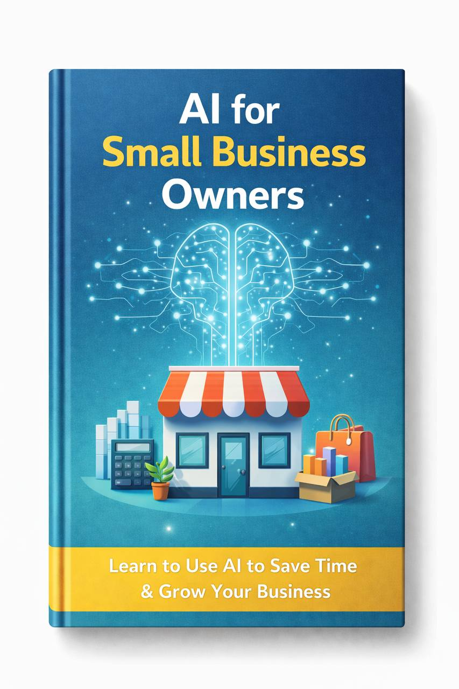

Most business owners end up here
- They experiment with AI but don't get useful results
- They assume it's complicated and ignore it
- They know it could help, but aren't sure where to start
A simple, practical guide showing small business owners how to use AI to save time, create marketing, and handle everyday business tasks faster.

AI is everywhere right now.
But for most small business owners, the problem isn't access to AI - it's understanding where it actually fits into the work they already do.
You hear people talking about AI constantly. You see tools everywhere.
But turning that into something useful for your marketing, communication, and daily business tasks isn't obvious.
The difference isn't intelligence.
It's simply understanding where AI actually fits into everyday business work.
Understanding where AI fits into your business can quietly change how you work every day.
Instead of spending hours on routine tasks, many of them can be done much faster with the right use of AI.
For example:
Over time, small improvements like these add up.
While many businesses are still unsure how AI fits into their workflow, others are already using it to save time and work more efficiently.
The difference often isn't effort.
It's simply understanding where AI actually fits into the work you already do.
This guide shows small business owners exactly where AI can remove friction from the work they do every day.
Not theory. Not complicated systems.
Just clear, practical ways AI can immediately make running a business easier.
Inside the guide you'll learn how to:
Most business owners experiment with AI randomly and get poor results.
This guide shows you how to actually use it properly, so it becomes a tool that saves time and improves the work you already do.
Once you understand where AI fits into your workflow, it can become one of the most useful tools in your business.
"I kept hearing about AI but didn't really know where it fit into my business. This guide actually showed me how to use it for things like writing marketing and responding to enquiries. Much simpler than I expected."
"I'd tried using AI before but the results were always pretty useless. The part about how to structure requests made a big difference. Now it's actually helpful for writing posts and planning promotions."
"I run a small landscaping company and don't have time to learn complicated software. This guide made it clear where AI is actually useful and where it isn't. I've already started using it for marketing and emails."
No. This guide was written specifically for people who are new to AI or have only experimented with it a little. Everything is explained in plain language, with a focus on showing where AI fits into the everyday work of running a small business.
No. This is a practical written guide you can read at your own pace. Most people can go through the entire guide in under an hour, and then refer back to specific sections whenever they need them.
You'll receive a downloadable digital guide that explains how small business owners can start using AI in their everyday work. It covers where AI can save time, how to structure requests so AI produces better results, and practical examples of how it can support tasks like marketing, writing, planning, and communication.
The guide isn't designed for one specific industry. Instead, it focuses on the kinds of tasks that exist in almost every small business - things like marketing, communication, planning, research, and content creation. These are areas where AI can often be surprisingly useful once you understand how to use it properly.
No. This is a one-time purchase. Once you buy the guide, it's yours to keep.
Immediately after purchase you'll receive instant access to download the guide.
More small businesses are quietly starting to use AI to save time, move faster, and produce better work.
The risk isn't that AI is too complicated.
It's staying behind while other businesses figure out where it fits first.
This guide helps you understand where AI actually belongs in the work you already do, so it becomes a practical advantage instead of something you keep putting off.